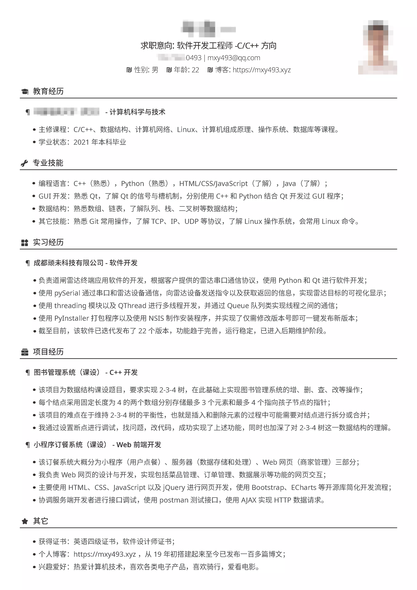

2020这一年找工作的经历
本文最后更新于：2022年3月23日 晚上
序言
2020年确实是极不平凡的一年，突如其来的新冠疫情让绝大多数的中国人不得不在家度过2020的上半年，而这半年是我大三的下学期。
我大概是在大三上期的时候决定了要找工作，所以后面就一心在为找工作做准备，其实并没有特意去做什么，更多的是做好了这样的打算吧。
先简单描述一下这一年我找工作的经历。首先是上半年由于疫情原因在家上网课，一边复习，一边投简历找实习，期间放弃了一两个不那么理想的实习岗位，到7月初终于找到了一份并不算完美但值得一去的实习工作。接着便是五个月的实习经历，到八九月份秋招，又一边实习一边投简历找正式工作，直到最终尘埃落定，算下来我应该是拿了三份offer，其中一份是来自实习公司的留用，我认为这是对我几个月实习工作的最大肯定，而最终我选择去的公司正是我梦寐以求的小米，毕竟做了五年的米粉了吧！
关于我找工作的经历，并不是说多么典型，或者说我自己也并不完全清楚别的同学都是什么情况，但总的来说我认为我的经历还是非常有参考意义的。
一些概念
春招：春季校园招聘。集中在3月到7月，一些公司的春招会开始的更早，主要是大三下期的同学找实习岗位，以及上一年秋招没找好正式工作的同学继续找毕业后的正式工作（你不会希望是其中之一）。
秋招：秋季校园招聘。集中在8月到12月，主要是找毕业后的正式工作。
HR：人力资源，“Human Resource”的英语缩写，一般就是指负责招聘工作的人。
SP：就是Special，指特别的offer。
SSP：Super Special，更牛皮一些的，高薪的象征。
五险一金： 养老、医疗、失业、工伤、生育和住房公积金，不同公司缴纳标准不一样。住房公积金通常可以提取部分用于租房。
时间线
1）大三下期春招（3月到7月）：复习的同时投简历找实习工作
2）暑假以及大四上期（到春节前）：什么时候找到实习，也就什么时候开始实习，如果没有其他事情可以一直实习到春节前。
3）大四上期秋招（8月到12月）：实习的同时找毕业后的正式工作。
4）大四下期（2月到6月）：理想情况下已经找好毕业后的正式工作，仍然可以实习大概两个月的时间，如果是找好的正式工作去提前实习可以这么搞，否则再实习就不是很必要了，这学期主要需要做的事情是做毕业设计，或者没有找好工作的同学需要继续找工作。
5）4月到5月：这两个月会比较集中的用于完成毕业设计，顺利毕业是头等大事！
首先是对于找工作还是考研这个问题，越早想清楚越好，最晚到大三上期也该做好决定了，有了明确的方向，才好朝着这个方向前进。
我相信大部分大学生对于大学的一些时间段是没有明确认知的，包括最开始的我，可能最初的想法就是大学就像高中一样安心上课，毕业之后才找工作。事实是，大部分学校都会将最后一年留作找工作或是准备考研，所以别想着时间充足，即便学校没有明确表示所有课程要在前三年修读玩，自己也要尽可能这么去做，尤其是对于要找工作的同学。如果大四了还有课程没有修读完，想想哪来的时间去实习？虽然实习不必要，但我百分百确定地说，实习经历是很有用的！
实习在时间上来说基本集中在每年的暑假，也就是说很多公司都会在暑假之前开始招聘实习生，到暑假七八月份的时候就可以入职实习了。以我的经历来说，我三四月份就开始投简历找实习，最终找到的实习工作七月中旬入职。当然这不是绝对的，后面的几个月仍然是可以找到实习岗位的，但我觉得那是留给没有找到合适实习岗位的同学的，所以最好别抱着这样的想法去找实习。还有就是可以这么算一下，很多公司都希望实习生能至少工作三个月以上，而很多同学也都会在春节前离职，所以想想也知道到十月份以后基本就不用想太多实习的事了。
不管是找实习还是找正式工作，都要趁早，我知道很多同学都会觉得自己还没有准备好，我自己也是这么过来的，确实会有这样的想法，一方面没准备好是事实，另一方面绝大多数同学也是第一次投简历、第一次笔试、第一次面试，往往还会经历第一次收到“感谢信”……但始终要明白，那些公司不可能等你做好了万全准备再来招聘，准备工作要提前做，都到了春招秋招的时候就别犹豫了，投了简历至少有个机会，说不定仅仅是因为你先投了简历就恰好被录用了。春招大概从3月开始以及秋招大概8月开始，就要开始投简历，一边投简历一边复习。
这一年剩下的时间都留给实习，期间甚至可以换一份实习，理想的情况下第一份实习工作7月入职，实习三个月10月结束，时间上确实是可以换一份实习工作实习到春节前的，但大多数情况下都不会遇上这种情况。
八九月的时候秋招，这时候应该正在实习中，工作的同时一定要关注秋招动态，继续找正式工作，除非你有决心和十足的把握要留在实习的公司。
总之后续一切以找到合适的正式工作为目的，应届生找工作相对机会多得多，只要自身能力不是太差，同时再稍微多努力一点，秋招找好工作并不是多么困难。
大四下期以顺利毕业为核心，通常至少需要花两个月以上的时间做毕业设计，主要集中在四五月份，六月毕业要处理一些毕业相关的杂事。其它时间根据个人情况安排即可，无非是实习或者找正式工作。
怎么做准备？
自身硬实力永远是找到工作和找到好工作的前提，所以怎么做准备的核心就是怎么提升自身能力？
首先是准备工作要融入到前期的学习中，大一大二的时候很多同学不清楚自己要做什么也不知道该怎么做，我觉得倒也不用过于担心，不过没有人会嫌自己准备的太早了是吧？所以尽早的去了解和学习一些对工作有帮助的东西，比如学校一定不会教的git，但几乎所有公司都会用到；比如Python语言的岗位并不多，但几乎所有公司都希望你会Python。
本科生找工作大多还是以编程语言为主，所以认准一门编程语言去深入学习，C++或Java是主流，更普遍的情况下是推荐学习主流语言的，同时学一下Python的有必要的，并不难，学了甚至有点上头😂
然后是大学一般会学到的几门课：数据结构、计算机组成原理、操作系统、Linux、数据库。这几门学科除了数据库对于找工作比较有针对性，其他几门学科可以说是房子的地基，面试的时候基本也是问这些基础知识，难度不会太大，只不过涉及的面会比较广。
前面已经说到本科生找工作通常还是以编程语言为主，像算法、深度学习一类的岗位要求会更高一下，但掌握一些简单的算法仍然是很必要的，比如说排序算法、递归算法就是笔试的大概率事件。强烈建议去Leetcode和牛客网刷题，笔试基本就是靠算法，难题一般都是动态规划，总而言之没什么捷径，多学多刷多练就是了，别让自己笔试就挂掉。
在哪里找工作？
首先大家要明确一下，“校园招聘”并不仅仅是企业到学校里面去办的线下招聘会，其实是泛指了针对学生群体的招聘，可以去很多公司的招聘网站看看，都会有校园招聘和社会招聘两大类，简言之就是校园招聘门槛会更低一些。
然后这个问题比较简单，主推各大公司的招聘官网和招聘微信公众号，投简历前建议去牛客网或其它地方找找有没有这个公司的内推码。
然后是各大招聘平台，个人对BOSS直聘、拉勾和智联招聘比较看好。BOSS直聘的用户群体比较大，的的确确是很多岗位都会发布在上面，并且能直接和公司相关负责人联系，总而言之就是有效信息更多，使用也更方便；拉勾上互连网岗位比较多，但怎么说呢，我觉得它有的BOSS直聘也都有，更多是将它作为对BOSS直聘的一个补充；智联招聘就比较花哨了，一方面很多公司的招聘官网就是智联定制的，比如OPPO，另一方面智联上会有很多线上校园招聘会，感觉机会会更大一些，但大多都是小公司。
最后才是企业到学校办的线下招聘会，将它放到最后是因为能到学校办招聘会的大公司并不多，小公司占多数。不过不同的学校也不一样，大公司会去好的学校办招聘会，如果你的学校恰好是这样，那应该将它放在首位，有一说一这样的招聘会成功率会高得多。
关于内推
内推大家基本都知道，就是公司内部员工推荐，内推的简历通常可以免简历筛选或者免笔试直接进入面试环节。但另一方面，现在内推太普遍了，你使用的内推码但你连内推人都不认识，到面试环节该挂还得挂。
总的来说，内推码有的话还是填上，大公司基本都有内推，去牛客网很容易找到，能免简历筛选、免笔试也是好事。
更靠谱的内推，其实是你和某个内部人员真的认识，或者说同学校的学长学姐吧，让他给你看看简历啥的，最好是部门直推，也就是直接把你推荐到他所在的部门，这种情况下能不能通过通常就看该部门领导了，但由于你和内推人认识，他去给领导推荐一下效果显然是好很多的。当然这种情况太难遇到了。
关于简历
简历一定是重点，务必要认真对待，毕竟看你简历的人对你一点都不了解，他需要从你的简历中了解到你有什么样的能力，有什么闪光点，也可能从中发现你的缺陷。所以做简历就是要凸显自己的优势，规避自己的劣势，让对方尽可能多的看到你对公司有价值的地方。
简历制作最常见的方式是Word文档，虽然可以，但其实我并不太推荐，我自认为Word的排版是极不方便的。也有很多人推荐像超级简历一列的简历制作网站，只需要填写内容就行，排版会自动完成，确实方便。
以上的两种方式我都是用过的，总的来说我并不是很满意，事实上有更专业的排版工具，比如微软的Publisher和Adobe公司的InDesign，这种工具是可以用来制作海报报刊一类东西的，也就是说你可以发挥自己的想象力，喜欢怎么排就可以怎么排，当然难度会大一些，付出的学习成本我认为是值得的。确实是有难度，我推荐这种方式，但也不是说别的方法制作的简历就不好，毕竟都只是工具。
简历的排版尽量避免花里胡哨，我自认为最简单的黑白配色就很简约大方，黑色用墨黑色个人觉得更雅致一些，纯黑色有点黑乎乎一片的感觉。配色别超过三种颜色，总之内容才是核心，别搞得花里胡哨的，越是简洁大方才越是让人眼前一亮；注意下字体大小、字间距以及行间距；段落文字使用两端对齐的方式，看起来更整齐；同级别的多个段落，尽量字数别相差太多，字数较少的尽量写大半行或恰一整行，字数较多的保持在一行半到两行范围内，会让人觉得内容丰富而排版简洁。
内容是核心，内容肯定是要改多个版本的，以我自身经历为例，我的简历贯穿找实习和找正式工作，总共改了六个大版本，以及针对不同公司的很多小版本。简历内容要有针对性，要找什么样的工作，内容就得往相应的方向靠。
简历的内容要点：
- 个人信息：姓名、年龄、性别、电话、邮箱；
- 教育经历：高中及以前的都不用写，写主修课程和学业状态，如果成绩特别优异可以写，否则就别写成绩；
- 专业技能：编程语言、Git、Linux、数据结构、计算机网络等，部分技能可以标注掌握程度；
- 实习经历：只专业相关实习经历，写明自己通过哪些技术做了哪些工作，取得了怎样的成果；
- 项目经历：真要有项目经历那写上去就是，很多同学大学期间仅仅是做了些很简单的课程设计，挑两个最具代表性，最能体现自己能力的项目写上去；
- 其它：英语水平（四六级）、获得的奖项、兴趣爱好等，有个人博客一定是不错的加分项；
- 不要放上去的：专业无关的兼职、没啥用的社团经历等。
我自己的能力是挺一般的，不排除大学有些同学确实是很优秀，但我觉得大部分同学的情况都没有那么理想。我相信，很多同学跟我一样会觉得自己很菜，没什么能往简历上写的，虽然这可能就是事实，但仍然要认真对待简历，多改改，避开自己的缺陷，找出自己的闪光点。凑字数的内容都不要，跟专业能力相关的基本都可以删，什么社团经历、兼职经历都不要；兴趣爱好、自我评价也不必要，即便要写也要精简，否则基本就是摆明了能力不够，字数来凑。
实习经历和项目经历我认为是核心，最能体现自己对某些技术的掌握程度。当然也必须是和专业相关的，可以采用 STAR法则 介绍自己的项目经历，用事实和数据说话，吹牛也可以，别吹的太过了就行。面试的时候面试官一般都是看着简历问问题，如果自己写上去的内容被问到又答不上来，那就是自己给自己挖坑。
接上一段，自己不会或者不太熟的技术点，都尽量别忘简历上写。简历上的内容不说面试官所有都会问到，也至少会问到1/3，而简历上没有写到的，面试官通常并不会多问，除非是他们需要用到相关的技术，也就是对应聘者有这方面的要求。所以，写到简历上的内容要尽可能保证自己会，写自己不会的就是给面试时的自己埋下的地雷。
最后放上我最后一版简历做参考吧：

城市
工作的城市我认为对于大多数同学无非是离家近的还是任意两种选择。有的同学希望离家近方便些，那针对某个城市去找合适的公司和岗位就行了；其他同学没有这个要求的话，可能对在哪个城市工作就没太多要求了。
总的来说当前国内的情况大概是北上广深分布了百分之八九十的互连网公司，比如北京的中关村就集中了超级多的企业总部，去这些地方找工作机会更多，薪资更高，通常物价也会更高一些。
很多人都不会一直做一份工作，在像中关村这样的地方就很方便跳槽到其他公司，概括地说就是机会更多一些吧。
对于想拼一下闯一下的同学，那去北上广深是必然有更大的发展空间的。
薪资水平
薪资受多方面因素影响的，没有一个绝对的标准。985或211院校，开发岗在成都、武汉这样的城市大概月薪大概能开到10k到12k，在北京、上海应该能开到16k到20k这样。
普通本科或者专科院校，开发岗在成都、武汉估计在6k到10k不等，在北京、上海估计在10k到14k不等。
以上只是我自己估计的一个区间，并不绝对，并且薪资水平也受很多因素影响。推荐关注”校招薪水“微信公众号，可以估算一下自己的薪水大概在什么范围。
当面试通过后，有的HR会和你谈薪资待遇，有的公司是定死了薪资是多少，看你能不能接受；有的公司则是可以谈，看你要多少，然后公司能不能给你你想要的。了解自己能拿的薪资范围，对于可以谈薪资的岗位，当然是往高了要，实在不行还能再让点步，如果自己要少了，那只能说是血亏🤣
不同地区薪资水平不一样是正常的，比如北京的16k薪资和成都12k的薪资相比，差别不大，毕竟成都2000租的套一比北京5000租的独卫舒服多了。什么？你要在北京租2000的房？好吧，9平米的超大单间了解一下……
关于面试
推荐观看：做好面试自我介绍，你需要知道这几点 | 核心要点、万能技巧、常见的错误介绍方式、案例分享
个人简记：
- 穿着得体，程序员一般没必要穿西装啥的，只要干净精神就行；
- 千万别迟到，注意礼貌；
- 说话别太着急，组织好语言，说清楚最重要；
- 诚实，不会就直言不会，不用急于表现自己多么厉害，保持谦虚；
- 技术问题上可以多引导面试官提问自己会的领域。
技术面向面试官提问：
- 工作使用的技术栈；
- 工作的大致内容。
向HR提问：
- 别问有没有五险一金，正经公司都有，可以问缴纳标准；
- 可以问工作时间、是否弹性工作制、加班情况（加班正常，主要看加班的严重程度）；
- 可以问公司的福利、休假制度
- 可以问公司的培养体系，个人的发展前景等。
其它
“海王”听说过吗？就是像我这种疯狂海投简历的，我找实习和找正式工作疯狂投了大约一百五十份简历，虽然我自知自己能力并不是特别强，但知名互连网大厂也是被我投了个遍，比如简历都没过的阿里和笔试挂掉的腾讯，事实就是我最终拿了小米的offer，尽管我一直以为进小米是遥不可及的。有些过来人会说简历别乱投，认准自己感兴趣的公司并结合自身水平去投简历。我认同但也不完全认同，认同的是要认准自己感兴趣的公司，或者说我觉得别去投自己丝毫不感兴趣的公司或岗位更符合我的观念，我认同要结合自身水平，但往往很多同学对自己的水平并没有一个概念，或者说往往都觉得自己很菜（即便这是事实），所以我觉得更准确的是大厂或者那些以为很牛逼的岗位都别怕，反正自己水平就这样了，投了就是个机会，没投就永远都不可能，说不准就被捞了呢！
关于找工作会有很多人讲经验、技巧什么的，本文我也讲了很多，但归根结底，自身能力才是解锁理想工作的金钥匙，永远不要幻想着靠运气或者什么技巧拿到理想的offer，你以为谁都能有我这样的运气吗？😂玩笑话，反正，努力学校才是硬道理，多积累知识，提升自身能力，当你能力足够强的时候，有没有好运气都是次要的了~
在我写下这篇博文的此时此刻，高中的同班同学，也是我们年级的第一名，考研考上了北大😂说实话我内心真的是羡慕和震撼！我们那小县城，不知道要多少年才能考上个清华北大，真的是🐂🍺！真心恭喜他！同时也感慨啊，比自己优秀的人还比自己努力，所以要虚心吖，多向别人学习！加油吧，打工人！